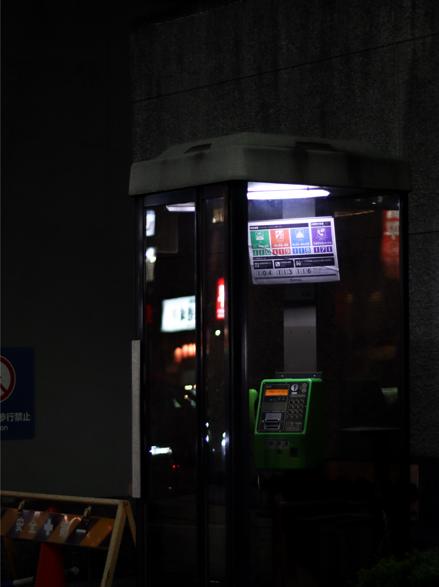
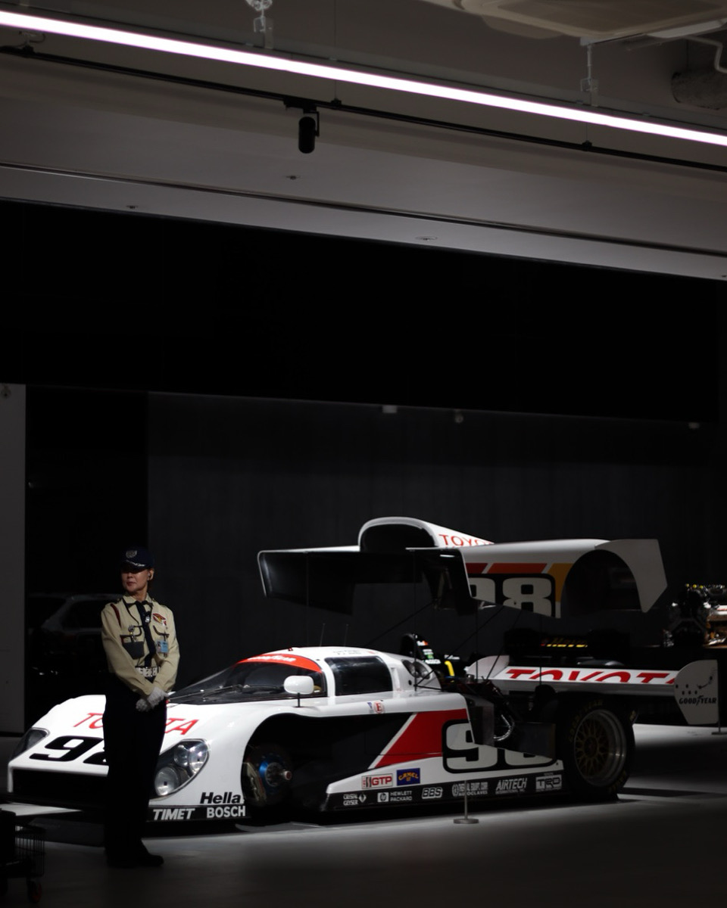
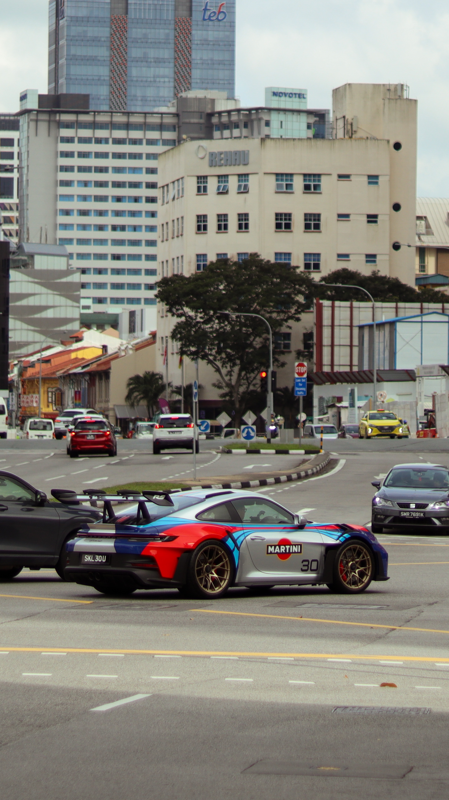

Modeling & Evaluation
Designing multimodal, vision, and language systems with rigorous experimentation and measurable business impact.
MLOps · PyTorch · TensorFlow.js · LangChain · Prompt Engineering · OpenCV
Applied AI Engineer · Bengaluru, India
I'm Swaroop — a senior software developer at UST Innovation Labs and a BITS Pilani alum. I work on multimodal LLMs, computer vision, and privacy-preserving architectures, collaborating across research and product teams to ship human-centered ML.
Designing multimodal, vision, and language systems with rigorous experimentation and measurable business impact.
MLOps · PyTorch · TensorFlow.js · LangChain · Prompt Engineering · OpenCV
Bridging prototypes to shipped experiences with resilient frontend and backend systems.
TypeScript & React · Three.js · Node.js · Python · AWS · CI/CD
Guiding cross-functional teams through discovery, alignment, and education to accelerate adoption.
Workshop facilitation · Tech evangelism · Stakeholder storytelling
Aug 2023 — Present
UST — Innovation Labs (R&D)
Driving applied AI research into deployable solutions across retail, mobility, and fintech initiatives.
Jul 2022 — Dec 2022
UST — Innovation Labs (R&D)
Immersive commerce blending 3D product visualization with real-time inference.
Jan 2022 — Jun 2022
Indsoft Software Technologies
Client-facing web modules spanning dashboards and data integrations for SMEs in Bengaluru.
2018 — 2023
BITS Pilani, Hyderabad Campus
2018 — 2023
BITS Pilani, Hyderabad Campus
Moments and perspectives through the lens — @this.is.swaroop



